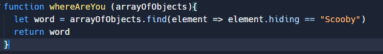

A simple problem I struggled with
A simple problem that stumped me for longer than it probably should have was the map method used on arrays. I tried this solution and couldn't for the life of me find out why the map method was giving me an array of undefined.

Even though all the other arrow functions I have used follows the following syntax
(element => {
console.log(element)
});
As used in the forEach method below.

After a while I just gave up and wrote my own solution using a for loop.

I then realized that the map method took a callback function as an argument like other array methods but does not use curly brackets {} like the rest. I have no idea why but thats just the way it is.

I was pretty frustrated when it wasn't working but MDN was my best friend. Took me a while to notice the difference but I got there in the end. I'm glad I found out the solution to the map syntax issue because even though my solution worked, it is a total mess compared with the one line map function and by sticking it out my code will be a lot cleaner going forward.
A problem I solved elegantly
Don't think I'd use elegant to describe any of my problem solving but I guess the above solution looks pretty nice on two lines. The problem solving technique which helped me the most in this problem would probably be console.log. Can be difficult accessing an object without seeing it so logging each step to the console steered me in the right direction.
How confident do I feel with the following problem solving t echniques?
- Pseudocode:
- Trying something:
- Rubber ducky method:
- Reading error messages:
- Console.logging:
- Googling:
- Asking your peers or coaches for help:
- Improving your process with reflection:
Pseudocode definitely something I need to do more in my code. Having a step by step plan will make the coding process much more smooth and lead you to get more into a flow state
rather than constantly thinking "what's next".
This is my go to. It's very rare that it will work on the first go so better to just try and learn from the results or error messages.
I do sometimes walk myself through the code line by line out loud if that counts, yet to explain it to a rubber duck though.
I am fairly confident in reading error messages and if not i'll just google it.
This is a must. If I'm not getting my desired result I'll just console.log through out my code to find exactly where the code is failing me.
Google is my best friend, I'm fairly confident in sorting through the irrelevant information to find what I need
This is something I haven't needed just yet but it will come and I'll be more than happy to ask for a hand.
Reflections have had a huge impact on the habits I'm forming in life and they've had a similar effect in my code. If I'm stumped on a problem for a while and solve it
reflecting on that issue helps make sure it won't happen again.